Crudzilla Web Application Builder (HiveMind)
User Guide
What is HiveMind?
HiveMind is a fully integrated platform that combines an application container (jetty),
a middle-ware and a developer environment to provide a one stop solution
for deliverying web applications.
-
The HiveMind platform significantly reduces the complexity and time to market required to build web applications, thus
a quicker ROI.
-
HiveMind is designed for both moderately skilled and experienced developers.
-
Built on the JVM, thus giving you access to the vast JVM platform and technology base
including all the available libraries.
-
HiveMind is polygot, allowing developers skilled in different
programming languages to benefit from a single platform.
-
HiveMind is a native web platform, meaning the entire platform is built on web technology including
the front-end which is browser based.
Note, you'll see the word referenced in the docs, cruds are
the executable constructs that make up the applications built on the HiveMind platform. The word and are used interchangealy.
There are various types of cruds and they are described in the docs.
You'll also see reference to argument map, this is a map () that is used to propagate
runtime values across your application. In code it can be referenced as arguments.
For architectual insight into the HiveMind platform and its design you may read the HiveMind technical document .
Creating a new web App.
To create a new application, right-click on target folder and do .

-
If you want authentication tables to be generated for this app then check the box.
Checking this box will enable authentication for your new app. The folder secure in your new
app folder is the default secure directory of your application. You can edit your
web.xml file to chose different security settings.
The default login is developer/developer
-
Database Connection
You have two database choices when setting up authentication
-
You may specify a datasource for an already existing database.
If you want to use a database such as mysql, oracle..etc, you'll need to first define a
DataSource object.
To create a DataSource object for your application, right-click on target folder and do .
If you have created a DataSource object for your new application, then drag-n-drop
it on the form above. Note that this Database must already exist.
-
You may choose to have HiveMind create a Database for you, this is however not recommended.
If you choose to create a database, then an embeded derby database is created,
this database would not require authentication. See derby documentation for details.
Note the embeded derby database is for the HiveMind product and really shouldn't be
used for other applications.
-
If you only specify a name and no DataSource, the App would be generated without authentication enabled.
You'll then need to manually enable authentication via edit of
web.xml and cwab-dist/etc/<APP-NAME>.jdbc.properties
If you are new to HiveMind, your first application is a good place to start exploring the capabilities of the platform.
New applications have boilerplate executables that cover all the key concepts of the platform.
Note: Creating a new app currently can be a bit slugish so don't be alarmed. This is because taxonomy
operations that include generating boilerplate artifacts are inherently inefficient. Future improvements will make this process
faster. This should however not be a problem given that creating new apps is not a frequent occurence.
Screencast
Request Parameters
The HiveMind platform provides a simple and powerful mechanism for managing request
parameters in an application. Parameter type and validation are handled by the user
simply stating what constraints the parameter must adhere to.
For instance to ensure a given parameter is an integer, simply declare the parameter on the
tab and specify any additional validation. The user does't have to write any code or do
any additional configuration in an external file.
More importantly, parameters are contextual, in other words the parameter is added to the executable contruct it applies to.
Every executable has a tab for declaring parameters.
Parameters also have a number of powerful capabalities that are described below.

-
- The name of the parameter.
-
- If checked, this parameter would be required on the argument map during execution. If it is missing, an error would be returned and execution terminated.
-
- If checked, this paramater's default value cannot be overwriten by a supplied
value. This is good for holding configuration that you don't want users to alter.
-
- This represents the parameter type. If default value doesn't conform to the format
of this type, an error may be returned.
- - if you choose to evaluate a crud type, the value should be a path that is either
relative to the current execution or an absolute path in relation to the application
crud home directory. In other words an absolute path isn't an absolute file system path
but rather a path that starts with
/ relative to the application's crud home
directory, specifically the directory pointed to by the servlet init parameter .
- - if you choose to evaluate a json value, you may parameterize fields by
prefixing them with
:crudzilla_param<PARAMETER-NAME> where
<PARAMETER-NAME> is the name of the parameter whose value should be
used to initialize the given json field. <PARAMETER-NAME> doesn't need to be declared, it only needs to be on the argument map.
- - if you choose to evaluate a plain text value,
string interpolation would be performed. ie HiveMind would look for and evaluate occurences of
#{<EXPRESSION>} where
<EXPRESSION> is any Java style expression, including variable access.
-
- Click on this to reveal the various validation options. The validation options
are dependent on the type. Validation error codes are defined in
crudzilla-app-settings/validation-error-definitions.
To see the error message structure simply run a test with the test console.
-
- This is the default value for the parameter. Depending on the type, the edit button
may be used to edit the data.
-
- This option controls evaluation of the parameter name/value pair. If the first
checkbox is checked, the Name field is assumed to be an assignment expression to be evaluated, for
instance to assign the value to an array index. If the second checkbox is checked, the Default Value is
assumed to be an expression to be evaluated.
Expression evaluation includes crud invocations, in other words to invoke a crud and use the result as
the value of a parameter, you must specify a type of "crud" and check the second box.
Similarly, to allow for json evaluation, a type of "json" must be specified and second box
checked.
In general you can specify any Java style expression to be evaluated.
Generative Parameter Values
These are built-in generative constructs. When you use them as a value for a parameter
and evaluate them, their values would be generated.
- - when used as a parameter expression or in a DataStatement,generates a uuid, this would be used mostly in DataStatements to generate ids.
- - this has the value of the most recently generated uuid and can be accessed from the argument map.
- - generates a uuid.
- - when used as a parameter expression or in a DataStatement, generates current time stamp in utc.
- - when used as a parameter expression or in a DataStatement, generates current time stamp in utc in seconds.
- - when used as a parameter expression or in a DataStatement, generates current time stamp in utc in minutes.
- - generate an empty string, by default if a value isn't specified for a parameter, its value is null.
- - returns the user name of currently logged-in user, can be accessed from argument map.
Variable Selection
Variable selection is a mechnism that allows a parameter to get its value from another parameter
selected based on a switch value. An example of a variable switch value would be the value qa to indicate
that the parameter should get its value for the QA environment.
Variable selection can be setup globally via crudzilla-app-settings/system-settings with
an entry for parameter crudzilla_variable_selector_switches, or locally.
To setup variable selection.
-
By default your crudzilla-app-settings/system-settings should have a global
switch setup.

crudzilla_variable_selector_switches points to the global application-wide switches
crudzilla-app-settings/variable-switches and typically would look something like this.
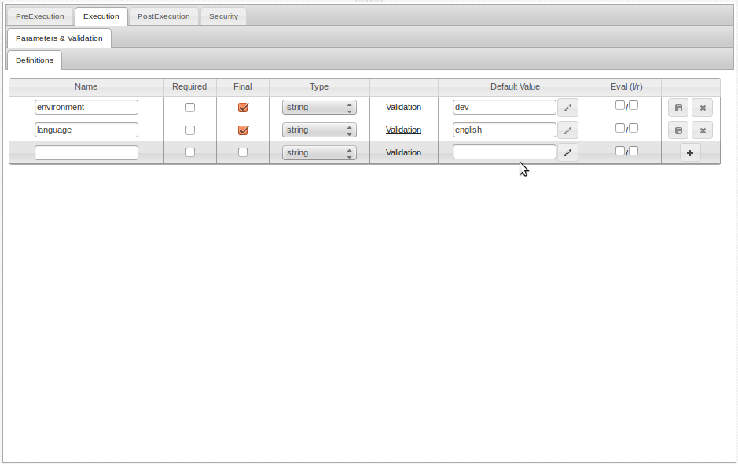
Each entry represents a switch whose value would determine the value of selector parameters whose
value depend on this switch. So for instance a parameter's value may depend on whether the language
is English or French..etc
-
Set the value of the parameter whose value you wish to set based on a switch to
crudzilla_selector_<SWITCH-PARAMETER-NAME>
where
<SWITCH-PARAMETER-NAME> is a parameter that holds the switch value, in other
words this parameter is the switch variable.
For instance <SWITCH-PARAMETER-NAME> could contain one of the following values:
Note that this parameter is an expression thus you should check the right expression box.
HiveMind would first look on the current argument map for <SWITCH-PARAMETER-NAME>,
if it isn't found, then it will look at the application settings for the object
crudzilla_variable_selector_switches. This object should have the application
level switches.
-
After obtaining a switch value, HiveMind uses a prefix pattern to get the parameter's correct value.
What this means is that HiveMind would look at the argument map for the value of a parameter
called <SWITCH-VALUE>_<CURRENT-PARAMETER-NAME>.
<SWITCH-VALUE> is the value obtained from the parameter with name <SWITCH-PARAMETER-NAME>.
<CURRENT-PARAMETER-NAME> is the name of the current parameter being evaluated.
-
Variable selection may be setup locally, meaning without using the crudzilla-app-settings/system-settings
crudzilla_variable_selector_switches entry.
Local setup is similar to global setup except the <SWITCH-PARAMETER-NAME> would be
on the current argument map.

Above, the parameter databaseUrl at run time would be set to the value of the parameter qa_databaseUrl, which
is the value localhost:3306/db1.
If the switch variable parameter environment had been set to the value dev then the resulting value would have been
localhost/derby which is the value of the selected parameter dev_databaseUrl.
Assigning Parameters to other Parameters
To assign a parameter to another, set the value of the parameter to
:<SOURCE-PARAMETER-NAME> and enable expression evaluation.
Note that the <SOURCE-PARAMETER-NAME> must be already on
the argument map, meaning it must be listed before the current parameter.
Note: Parameters are processed in the order they are listed (ie sequentially) so parameters that depend on the
value of other parameters must be listed below those depended upon parameters.
Note that all parameters that are expressions must be final by default in order
for parameter expressions to be evaluated. This is for security reasons, it prevents user
supplied values from being evaluated. To override this behaviour see the configuration section.
Writing Code
HiveMind is a polyglot platform, meaning it allows the user to write code in a number of programming
languages. The HiveMind construct that supports code execution is called a ScriptExecutor. You create
ScriptExecutors by right-clicking on the folder you want to save them in and do ,
then choose the type of language you want to code in.

Above shows the code editor, the code editor depends on the language of the ScriptExecutor.
When creating a ScriptExecutor, depending on the type you may have the choice to create a
file on the disk. For instance velocity templates can be loaded from file sytem or the template
may be provided dynamically.
When code is loaded from file, cruds are still the entry point to the code, in other words
you can't invoke a velocity template directly, you must invoke the corresponding ScriptExecutor.
ScriptExecutor have a number of native objects available to scripts.
- -
This object is used for invoking other executables. It has the following methods:
- - see section on logging
- - returns the file system path of application's
web folder.
The usage syntax of the object when calling other executables is as follows: crud.[add(<parameter-name>,<parameter-value>).]*[using(<module-name | module-path>).]
call(<crud-path>[,<arguments-map>][,<run-as-from-serverside>]);
-
This is either a relative or absolute path of an executable. Both relative and absolute paths are resolved relative to the application
web directory.
-
This is a object to be passed as an
arguments map for the call.
If this argument is supplied, the parameters added via an call will be ignored.
-
Set this to
false so the call is treated as if it came directly from browser thus enforcing server-side access restriction, the default is true.
This is generally useful if your application uses an interceptor.
-
this is either a relative or absolute file system path of a module. If the path is relative, it will be resolved against
the system setting property
crudzilla_module_base, if crudzilla_module_base is not set then it is resolved against the asset directory.
-
It will be resolved against the system setting property
crudzilla_module_base. If crudzilla_module_base is not set then it is resolved against the
default module locations crudzilla-modules in the HiveMind installation directory. Note the module name is the app name, which is the same as the folder name.
-
-
This is an object that represents the current instance of the HiveMind execution engine.
In general it should not be used by a developer. However it does have the method
sysSetting which contains crudzilla-app-settings/system-setting.
The object returned by this method has get and set methods for
accessing the properties.
-
-
HttpServletRequest object
-
-
HttpServletResponse object
-
-
Argument map as described above
-
-
currently logged in user, if any
Modules
Modules are a way to make applications dependent on other applications. Modules are just depended
upon applications. Of course the application could just be a set of functionality to be
used by other applications, in other words not a standalone application.
The using method decribed above is what you use to invoke a call to a module.
The file extension of ScriptExecutor is "ste".
Screencast
Database Interaction
Perhaps the most powerful feature of the HiveMind platform is it Database interaction capability.
The HiveMind platform reduces the work required to interact with a database to simply specifing the
necessary SQL. The user doesn't have to write any additional code to interact with data.
Besides SQL, the user doesn't need to know any other programming concepts to do database interactions.
The executable construct that supports Database interactions is called a DataStatement. To create a DataStatement
the user simply decides where to put it, right click on the folder and do .
The DataSource Object
Of course before you can interact with a relational database, you need to be able to connect to it.
A DataSource object is a configuration object for specifying a database connection. To
create a DataSource object right-click on the target folder and do
.
-
- Database name.
-
- The datasource type, can be one of the following
values
jndi,jdbc-driver,datasource-bean.
When datasource-bean is specified then it is assumed that this object contains
the properties for the resulting datasource object and also the property className
must be present and must be the qualified Java class name for the DataSource implemenation.
-
- The url for the database connection. This is required
when type is
jdbc-driver
-
- login user name for authenticating to database.
This is required when type is
jdbc-driver.
-
- login password for authenticating to database.
This is required when type is
jdbc-driver.
-
- Fully qualified Java class name for the
jdbc driver to use. This is required when type is
jdbc-driver.
-
- For JNDI datasources.
This is required when type is
jndi.
-
- login user name for authenticating to database.
This is optional when type is
jdbc-driver. You may use this in place of user.
-
- login password for authenticating to database.
This is optional when type is
jdbc-driver. You may use this in place of password.
Template
HiveMind gives the user a nice interface for specifying SQL.
This tab contains the sql editor for entering an sql template. This template can include parameter
specifications.

-
- Drop DataSource definition object reference here. You can create a DataSource
object from the DataSource menu. The DataSource types are
jndi,jdbc-driver,datasource.
If the datasource type is specified, then it is assumed to represent a javax.sql.DataSource
instance.
You may also pass crudzilla_datastatement_datasource_config as the datasource dynamically.
-
- This is a list of DataModel References to be used by the sql in this
DataStatement. Please see section on DataModeling for a detailed
description of this technology.
-
- An object that represents a JDBC transaction.
You can create a Transaction object by right-click on target folder then do
- - do nothing
- - when selected, this DataStament would start a new transaction identified by the
transaction object.
- - when selected, this DataStament would start a new transaction identified by the
transaction object, but would not execute this DataStatement.
-
- when selected, this DataStatement looks for the specified transaction and joins it.
-
- when selected this DataStatement joins the specified transaction and commits the
transaction after execution.
-
- when selected this DataStatement joins the specified transaction and commits the
transaction without executing the DataStatement.
-
- A Velocity template that contains the dynamic sql. When this is specified, the
sql in the editor of this DataStatement is will not be executed directly.
When using dynamic sql, the parameter crudzilla_dynamic_sql_resultset_template
must be set, this should follow the format of the "Compiled" sql...see the "Compiled"
tab of a non-dynamic sql DataStatement for an example of what a resultset template
must look like.
If SQL is entered in the editor for a DataStatement, it will be available as
a parameter crudzilla_prepared_dynamic_sql_statement, meaning it can then be used
in JDBC code that executes the actual database operations.
You can also pass crudzilla_dynamic_sql_statement as the sql to execute. This provides
flexible means to use DataStatements.
-
- A ScriptExecutor that processes the JDBC ResultSet object that result
from running this DataStatement.
This is an advanced capability which gives the developer full control
over the processing of the resultset from an executed query. The resultset is
available on the argument map as crudzilla_datastatement_resultset,
this is a JDBC resultset object type.
Compile
This tab shows the compiled sql in the Template tab. The template is compiled whenever a user saves changes to the template.
All parameters are extracted and replaced with
placeholders (?).
This tab shows the Parameter List expected by this DataStatement and the ResultSet Template if
this DataStatement returns values.
The platform parameter crudzillaResultSetFormat is available for use with DataStatements. The value
can be one of the following:
- - to return the result as a single object
- - return result as a list. This is the default
- - return the result with column information. The resulting object has the form
{"columns":[{"name","type"}],"rows":[{}]}.

DataStatements also support the platform parameter crudzillaJavaLangClass.
Set this to the fully qualified Java class name if you want the resulting
data to be converted to a Java bean of the specified class type.
The platform parameter crudzilla_default_datasource should be set as part
of crudzilla-app-settings/system-settings to specify a default data source for
newly created DataStatements. This would be automatically filled in whenever a
new DataStatement is created. Most business applications only have a single
data source, so this would save the developer a few extra clicks.
Parameter Type Hinting
DataStatements support type hinting, this is useful for RDMSs that have strict type
requirements for prepared statement parameters. To specify a type simply enclose the
type in parenthesis following the parameter name.
The syntax is as follows: :<PARAMETER-NAME>(<SQL/Java-Type>)
When a type hint is supplied with a specified parameter,
the following additional parameters may be supplied.
- For types: BINARY, VARBINARY, LONGVARBINARY,CLOB,BLOB
-
Base64
-
crudzilla_base64_format_<PARAMETER-NAME>_linelength
-
crudzilla_base64_format_<PARAMETER-NAME>_lineseparator
-
crudzilla_base64_format_<PARAMETER-NAME>_urlsafe
-
Base32
-
crudzilla_base32_format_<PARAMETER-NAME>_linelength
-
crudzilla_base32_format_<PARAMETER-NAME>_lineseparator
-
crudzilla_base32_format_<PARAMETER-NAME>_urlsafe
-
Binary
-
Hex
-
crudzilla_hex_format_<PARAMETER-NAME>_charset
-
DATE
- crudzilla_date_format_<PARAMETER-NAME>
-
TIME
- crudzilla_time_format_<PARAMETER-NAME>
-
TIMESTAMP
- crudzilla_timestamp_format_<PARAMETER-NAME>
BLOB,CLOB
you may also upload files in place of data for these types, so for instance you may call a DataStament in a multipart http request that includes an image file to be stored in a blob.
The types supported are either Java types or SQL types, in other words JDBC types.
JDBC Transactions
Transaction support is easy to add, simply create a transaction object by right-click on
target folder and do
You must specify a unique name for your transaction object. The name must follow the java
identifier naming syntax. A running transaction can be accessed on the argument map as
crudzilla_transaction_<TRANSACTION-NAME> where
<TRANSACTION-NAME> is the unique name of the transaction.
The crudzilla_transaction_<TRANSACTION-NAME> object has properties
-
- a reference to the raw transaction configuration object, ie the Instantiator specified
in the DataStatement.
-
- JDBC connection object for the transaction
Dynamic Transactions
The transactions properties outlined above can be specified dynamically in code.
To dynamically pass a transaction config object pass it as crudzilla_transaction_object.
Transaction action can be specified by passing crudzilla_transaction_action.
The file extension of DataStatement is "stm".
Screencast
Configuration
Configuration on the HiveMind platform is a vasatile capability that can be used to solve a variety of problems.
HiveMind doesn't rely on configuration files in formats such as xml, json or Java properties files.
Instead the user can create named objects to hold configuration. These objects can be called in code
or in parameter declarations. These named objects are called Instantiators. To create an Instantiator simply
right click on the target folder and choose .
The parameters of Instantiators form the properties of the resulting object.
By default an Instantiator would return a generic
java bean. If the platform parameter crudzillaJavaLangClass is supplied, the object is of this type. The
screenshot below shows the application settings for HiveMind developer environment application as an example.
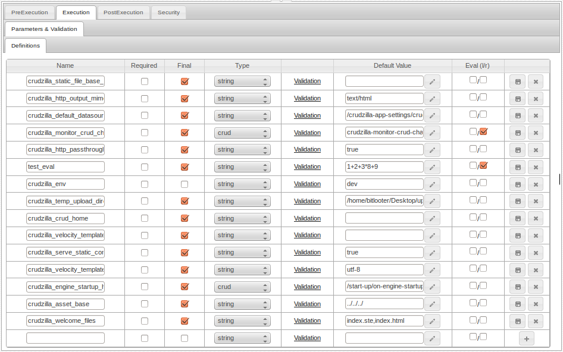
When a call is made to an Instantiator that returns an object, the object's properties can
be referenced with the dot notation just like any other object, because they are in fact
real objects.
Lists
An Instantiator that only has the value of properties without the corresponding names would
be interpreted as a list. In other words to make a list, just add parameters that have no name.
If an Instantiator returns a List, this would be a java.util.ArrayList object.
The file extension of Instantiator is "ins".
Screencast
Uploading Files
File uploads are one of several common tasks that developers always have to do when building a web application.
As with doing database interactions, within the HiveMind platform the user doesn't have to write code for
doing file upload. File uploads are done using an executable contruct called a FileUploader.
To create a FileUploader simply right-click on taget folder and do .
Properties
The following properties allows you to upload files and control how the
uploaded file should be handled.
- - where to upload the file, by default it is
., meaning the working directory of the
crud.
- - set to
true if you want an auto generated name for uploaded file
- - a name to use for uploaded file, if not specified and name is not auto generated
then the original file name is used.
- - a prefix for auto generated file names.
- - file size limit for uploaded files.
- - mime type of uploaded file.
- - set to true if you want to unzip uploaded zip files.
- - set to true if you want the original zip file to be deleted after unpacking.
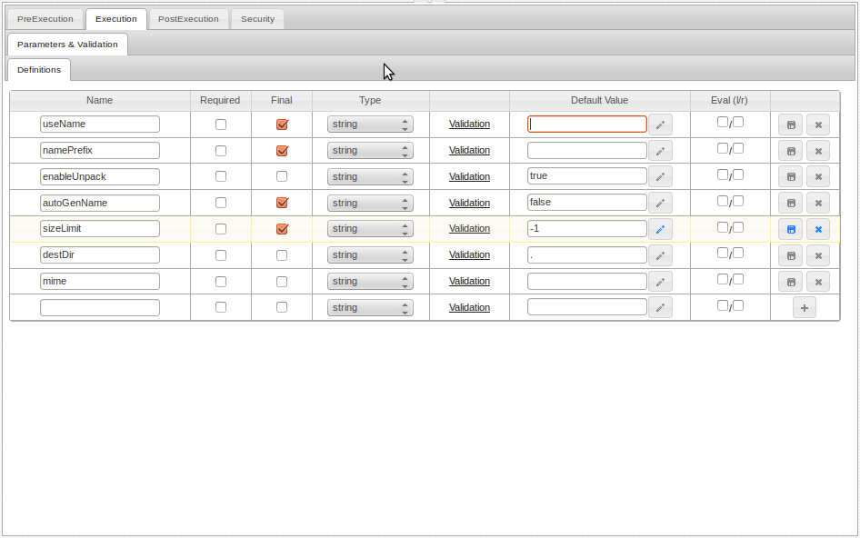
Note, you may optionally set crudzilla_temp_upload_directory in crudzilla-app-settings/system-settings
to specify a temporary location of uploaded files before they are moved to their destDir.
The file extension of FileUploader is "upl".
Screencast
Connecting to HTTP Services
HiveMind provides an executable called HttpConnector for connecting to HTTP services. User can use
HttpConnectors to connect to RESTful services or even to download remote files and login
to remote web applications.
As with many other aspects of using HiveMind, HttpConnector connectors
require writing no code. You only need to specify the necessarily parameters. To create an HttpConnector
simply right-click on target folder and do .

Properties
Use the necessarily combinations of the parameters below to connect to HTPP services.
- - url to connect to. If it is a string then it is assumed to be a single url,
otherwise it can be a list of objects each with property
url,destDir, saveAs,enableUnpack,deleteOriginal
- - header for request. This can be an executable (Instantiator or ScriptExecutor) that returns the header object or a json defining header object. Note the header object is a single object with name/value pairs.
- - user name for http authentication.
- - password for http authentication.
- - this is option as it will be extracted from url if not specified
- - similarly optional if url will be used for authentication.
- - Set to
true if this is a file download.
- - directory to place downloaded files in.
- - specify a file name to use for downloaded file.
If not set, the
Content-Dispostion response header is consulted,
if this header is absent then the download url is assumed to end with a file name and that would be used.
- - set to true if you want to unzip downloaded zip files.
- - set to true if you want the original zip file to be deleted after unpacking.
- - This can be
- - no authentication
-
- for form based authentication.
-
- Authenticates before making the url request. basic authentication.
-
- Authenticates before making the url request.digest authentication.
- - maximum upload size if this is a multipart request.
- -
-
- - for multipart request, this specified where to get files from
-
- when the files are uploaded as part of a browser based upload.
-
- Use this if you want data to comre from file system.
-
- json array of objects of the form {"path","paraName"}.
path is the local file system path of the file to upload and the paramName is
the http parameter name to use for this file.
-
- http method
- - for chunked post, what is the mime
- - not used
- - url for form if form authentication is used.
-
- form user name http parameter name.
- - form password http parameter name.
- - This can be an executable (likely an Instantiator) that returns the parameters object or a json defining the parameters object. Note the parameters object is a single object with name/value pairs.
Return value
The return value for this executable type is an object with the following structure :
- - the headers returned by the request.
- - the http status code
- - the http status line text
- - the response body of the request
The file extension of HttpConnector is "svc".
Screencast
Sending E-mail
Sending email is another common web application development task. As with other such
tasks, no coding is required to send emails in HiveMind. HiveMind provides a construct called an
EmailSender. To create an EmailSender simply right-click and do .
You can send both single emails and bulk mail depending on how you configure the EmailSender.

Properties
Use the necessarily combination of the following properties to send email
-
- The smtp host name.
-
- smtp port.
-
- set to
true if you want ssl enabled
-
- this is for embeded images.
-
- login username for smtp server.
-
- pass username for smtp server.
-
- this can either be html text, plain text or the url of an executable that will generate the html.
when it is a an executable url, it must be evaluated and the return object must be a string.
-
- this can either be plain text, or the url of a crud that will generate the html.
when it is an executable url, it must be evaluated and the return object must be a string.
-
- for bounced email.
-
- a json array of objects of the form
{"emailAddres","name"},
name is optional.
-
-
- a json array of objects of the form
{"emailAddres","name"},
name is optional.
-
- a json array of objects of the form
{"name","value"}
-
- for html email value is HtmlEmail, for text use SimpleEmail.
-
- a json object of the form
{"emailAddres","name"},
name is optional.
-
- a json array of objects of the form
{"emailAddres","name"},
name is optional.
-
- text of subject line
-
- a json array of objects of the form
{"path","name","description","url"}.
path or url is required, all other fields are optional.
-
- Specify for sending bulk mail,
this should be a list where each object is a unique email. For each object in this list,
the values would be exploded onto the arguments map before processing the corresponding email.
-
- Set to true if
messageTemplate property must be evaluated for each bulkMailData entry.
-
- Set to true if
alternativeTextMessage property must be evaluated for each bulkMailData entry.
-
- Set to true if
subject property must be evaluated for each bulkMailData entry.
-
- Set to true if
to property must be evaluated for each bulkMailData entry.
-
- Set to true if
from property must be evaluated for each bulkMailData entry.
-
- Set to true if
attachements property must be evaluated for each bulkMailData entry.
The file extension of EmailSender is "esd".
Screencast
PreExecution Handlers
PreExecution handlers are actions you want to happen before the primary action of the current execution.
This occurs after security checks and parameter processing has been applied.
Handlers simply call other
executables within your application. For instance the handler could call a DataStatement to get some data
that would then be used for the current execution.

-
- check this to enable this handler. If unchecked, this handler is ignored and not
invoked.
-
- drag-n-drop the executable you wish to execute as part of the PreExecution process, this is optional depending on argument propagation options.
-
- check this if the handler invoked is required to return the value
"true". If any other value is returned, then the primary execution would terminate and return
the value.
-
- This controls how the argument map is propagated across invocations.
-
- selecting this passes the current map as a reference,
meaning the current map could be altered by the handler invoked.
-
- selecting this propagates all values of the
current argument map but not the map itself. The current map would not be altered
by the handler invoked. Note, for values that are Java objects, they could be
altered by the handler invoked.
-
- selecting this allows you to specify an Instantiator that will return
the name/value of the argument map values that will be propagated. This is a way to restrict
which current argument map values are propagated to the handler invoked.
-
- selecting this passes none of the current argument map's entries to the handler
invoked.
-
- The value selected determines what to do with return value.
-
- selecting this would ignore the return value of the handler invoked.
-
- Put return value from handler invoked on argument map.
When selected, a field called "Save Return As Variable" is visible. Specify a variable name to be added to the current argument map that
represents the return value of the handler invoked. The name can then be used in all
places where argument map variables can be referenced.
-
- selecting this, explodes the result of the handler invoked on the
argument map.
When this is
selected, a field called "Selected Properties" would be visible, this is a reference to an
Instantiator that would return the set of properties from the returned result to explode
onto the current argument map. If the selected field isn't specified, all properties would
be exploded.
Note that the return value of the handler invoked should be an object, in other
words not a list.
PostExecution Handlers
PostExecution handlers are actions you want to happen after the primary action of the current execution.
You can return the result from these handlers as your final return values instead of the
results from the primary action.
Handlers simply call other executables within your application. For instance the handler could call a DataStatement to update some data
as a result of the current execution.

-
- check this to enable this handler. If unchecked, this handler is ignored and not
invoked.
-
- drag-n-drop the executable you wish to execute as part of the PreExecution process.
-
- same as in PreExecution
-
- The value selected determines what to return as the return value of the primary execution.
-
- selecting this would ignore the return value of the handler invoked.
-
- selecting this returns the result of the handler invoked as the
overall result of the primary invocation.
-
- selecting this, appends the result of the handler invoked as a
property of the primary result object of the primary invocation. When this is
selected, a field called "Append As Primary Variable" would be visible to name the
property to be appended.
-
- selecting this, appends the primary result of primary execution to the result
of the handler invoked. When this is selected, a field called
"Append As Primary Variable" would be visible to name the property to be appended.
-
- selecting this allows you to specify the name of a property on the
argument map that should be returned as the primary result of the primary invocation.
When this is selected, a field called "Return Variable" would be visible to
name the property to be returned.
-
- Put return value from handler invoked on argument map.
When selected, a field called "Save Return As Variable" is visible. Specify a variable name to be added to the current argument map that
represents the return value of the handler invoked. The name can then be used in all
places where argument map variables can be referenced.
-
- selecting this, explodes the result of the handler invoked on the
argument map.
When this is
selected, a field called "Selected Properties" would be visible, this is a reference to an
Instantiator that would return the set of properties from the returned result to explode
onto the current argument map. If the selected field isn't specified, all properties would
be exploded.
Note that the return value of the handler invoked should be an object, in other
words not a list.
Error Handlers
Error handlers are a special type of PostExecution handler, if an error occurs and there
is an enabled error handler, that handler would be invoked as the last action.
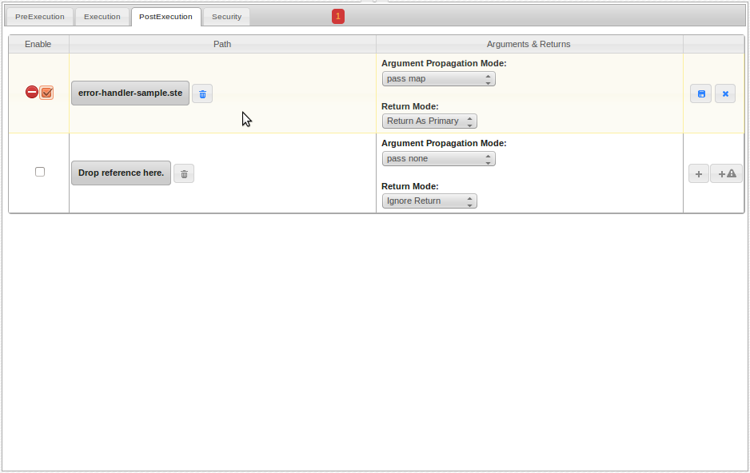
The argument map would have an ErrorWrapper object crudError
with the following properties
- - Java Exception object.
can be null if error wasn't due to an exception.
- - Error type can be of the following values
- - when access fails to be granted
- - when parameter validation fails
- - when an error occured during primary action, this could be an error in
scripts, check exception log for further details.
-
- attempts to give a clue as to where in the execution the error occured.
The values can be one of the following
- - during parameter validation
- - during primary action execution
Application Security
You can restrict access to an executable by userName or by role. When userName is specified then
httpRequest.getUserPrincipal.getName must be equal to the userName.
If role is specified then httpRequest.isUserInRole must return true when given the role name.
If both userName and role is specified then both must pass for access to be granted.

-
- check this if you only want this executable to be invoked from server-side operations,
for instance by other executables. This would prevent this executable from being invoked directly from a browser.
-
- check this if you want all user identity entries to be evaluated.
This will require the user to have all the roles listed, otherwise access isn't granted.
-
- drop a refrences to a user identity object. You can have as many identity entries.
Any entry to this list, automatically implies authentication is required. So for instances you can drop
a user identity object whose user and role entries are blank to indicate that only authentication
is required.
A user identity object can be created by right-click on target folder and doing .
Testing Your Application
Testing your application involves testing executables. To test an executable your can right click the executable
and select .
- - select the expected result type.
- JSON - for JSON data.
- Html Page - If you want the result to open in a new browser tab and an html page.
- Text - if expecting plain text
- - check this if you don't want the parameter sent to the executable being tested.
- - parameter name
- - parameter value

Simulate
When you simulate an executable, the executable is run in the context of a HiveMind engine instance that attempts
to simulate the instance that will be running in your application. You simulate if your app
isn't running or if you want to test a crud that requires authentication but you would like
to bypass the authentication for the purpose of testing.
Run
When you run an executable or any other static asset, the test invokes a url directly against
a running app. In other words when you run a test, it is assumed that your app is running
at the url specified in the app context.
Programming HiveMind
The HiveMind developer environment is self-referencing, what this means is that HiveMind is used to
build HiveMind, similar to how eclipse or netbeans may be used to build new versions of themselves.
There are a number of functionality in HiveMind where you directly alter the functionality by
modifying certain cruds.
Adding CodeMirror Modes
CodeMirror is the editor used for coding in HiveMind.
You can add aditional editor modes to edit text files.
Adding new modes involves the following steps
-
Current modes are defined in the folder
com/crudzilla/HiveMind/web/editor-mode-definitions.
Navigate to crudbase and open this folder.
-
Create the new mode via right-click .
-
Fill out the mode fields, see other modes for examples.
-
Map mode to an extension by adding an entry to the
com/crudzilla/HiveMind/web/editor-mode-definitions/codemirror-editor-ext2modes Instantiator.
-
To add a new mode to the Web Resource menu, add an entry for the new mode to the
com/crudzilla/HiveMind/web/editor-mode-definitions/editable-types Instantiator.
-
When you refresh, if you added a menu item then the new mode will have a menu item and you
should now be able to create files of this mode.
Adding new loggers
You can add logging from additional classes that you may have in jar components. This can be done
both for HiveMind and your own apps, so if you are building or using a Java component that is packaged
as a jar and deployed with your web app, you can access the log output from classes in such a
component in the HiveMind developer environment log-viewer by configuration.
-
Every app created in HiveMind has a folder
/dev-logging/classes in the base (web) folder of that application.
By default this folder has configuration for logging from the crud execution engine.
Open this folder to add new log configurations.
-
Create the logger config via right-click .
-
Fill out the mode fields, see other logger configs for examples.
-
To enable logging from this newly added class, open the
dev-logging/classes/class-list Instantiator
and add an entry for the newly added class logger config.
-
You'll need to restart HiveMind for this to take effect.
Altering App configuration
When you create a new app a new configuration is created to register that app with HiveMind.
This configuration is the same as the object created if you right-click a folder
.
All app configs are stored in folder com/crudzilla/HiveMind/web/new-web-app/app-list.
They have the same name as the app and they are registered by addng an entry to
com/crudzilla/HiveMind/web/new-web-app/app-list/apps.
The contextPath propertie is important as it points to the url of the app and this is used for testing
cruds that belong to this app and also for the logviewer feature to work correctly.
Adding new users to your HiveMind installation
You can manage users using the simple tool from the application menu.
You may also build on this tool for more surphiscated user management.
Folder com/crudzilla/HiveMind/web/user-identity contains executables for managing users.
Preemptive Schema Data Modeling (PSDM)
Ordinarily when you want to add a new data model to your application, you create a table to represent the model and
add columns to represent the fields of that model. What the HiveMind PSDM technology suggests
is to use the database table and columns as storage devices instead of modeling constructs.
The data modeling technology built into HiveMind allows you to create DataModels in HiveMind and map them
to database tables and columns. When you use HiveMind data modeling, you view the database tables
and columns in your application database purely as storage devices. When you want to know what your actual data models look
like you'll look at your HiveMind DataModels not your database tables and columns.
Note that this is still an experimental technology. However it is
very much in use, for instance it is used with HiveMind for the task manager functionality and also used for the Parts Store.
Creating Premptive Schema tables
The first step towards data modeling in HiveMind is to create the Preemptive Schema database tables. This means
creating one or more database tables each with its own pool of columns of various sql type distributions.
Below is an example of what a Preemptive Schema database table looks like, note the distribution of
sql types. It is up to you and your need to decide what the sql type distribution should be
for your Preemptive Schema tables.

You should view a Preemptive Schema table as a large matrix that holds data. The data modeling in HiveMind
provides the mechanism to make sense of the data in the matrix.
Generating Preemptive Schema table sql create statement.
To generate the sql shown above, you need to create a generation strategy.
Note that all
steps outlined below are optional, you can use any other means to create a database table
with a pool of columns of various sql types. The generation facility provided by HiveMind is only
for convenience but not required.
-
Create a folder, where your strategy information would be stored.
-
For each sql type you wish to create columns for, create the generated column type.
From the Data Modeling menu:
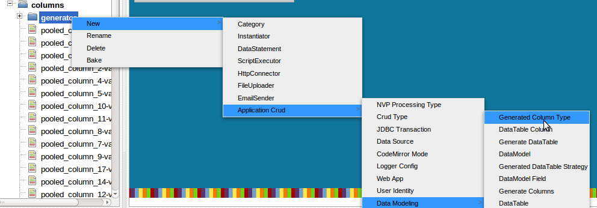
-
Fill out the Generated Column Type. The count is the number of columns of this type
that should be generated.
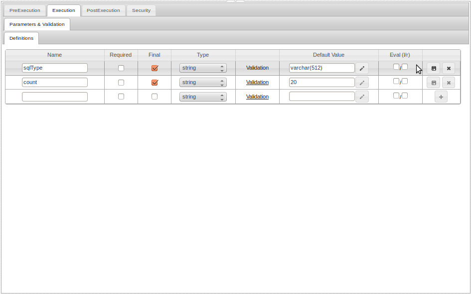
-
Create an Instantiator and list the created types in it. Make these types executable.
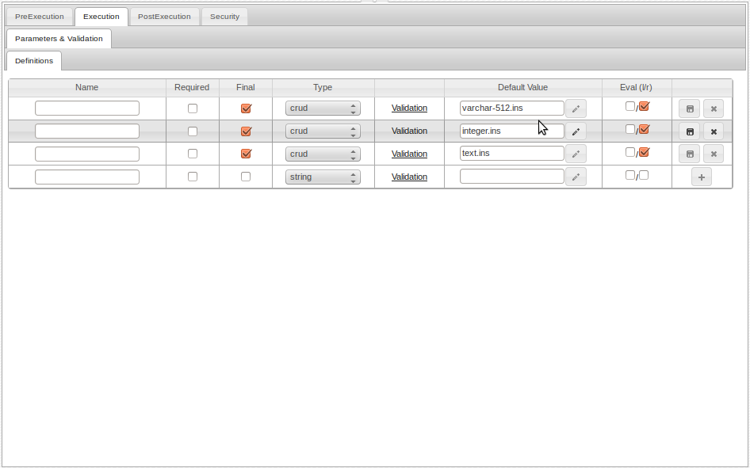
-
Create a "Generated DataTable Strategy" ... this should point to the list in the step
above.
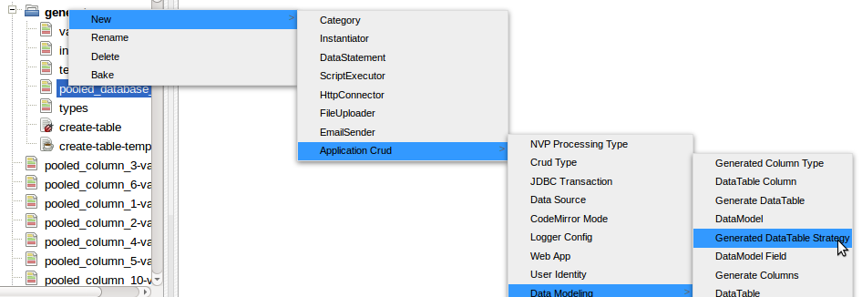
-
Fill out the strategy fields.
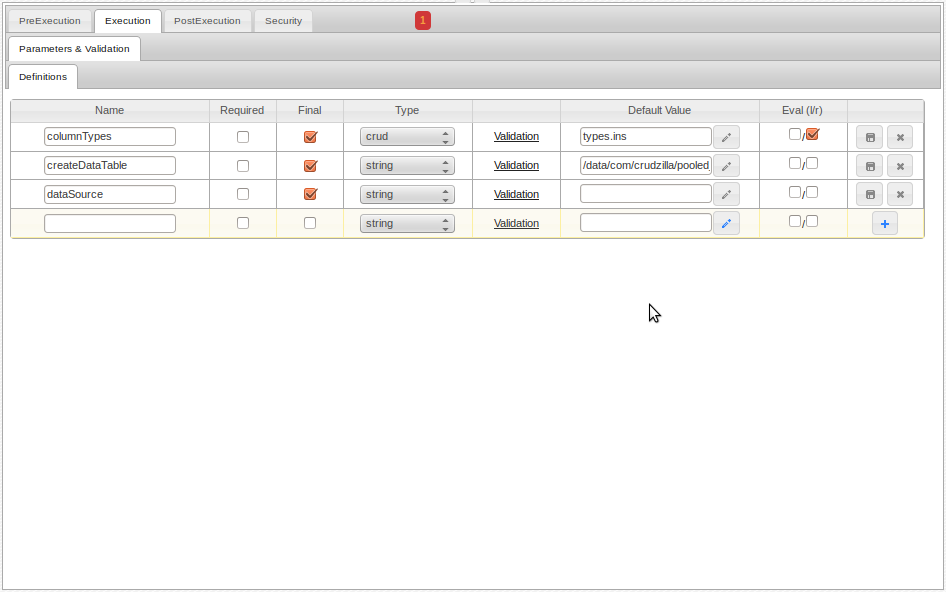
-
- Specify the path to the type list created above.
-
- Specify a dynamic DataStatement that would accept the generated
create table sql and execute it. This DataStatement should expect a
parameter
sql which is the sql we are going to generate.
- -OR-
-
- Alternatively, you can simply specify
a DataSource against which the generated sql must be executed, HiveMind would take care of executing it.
-
HiveMind provides a simple tool for generating the necessary sql statements for creating
Preemptive Schema tables. You can access the Preemptive Schema generator from the Application menu.
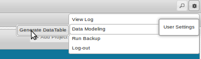
-
Preemptive Schema table Generator Tool

- Drop a reference to the strategy created above
- Click the Generate the button to generate the create statement sql template,
change the name of the table you wish to generate
-
Click the Create button to run the generated statement.
Note that this is optional as you can just run the generated sql in an
sql client of your choosing against your application database.
Create DataTable Object.
After creating a Preemptive Schema table as outline above, you need to create a corresponding DataTable object
in HiveMind that will be used to map DataModels to the actual database table.
-
Create a folder, this folder should have the same name as the Preemptive Schema database table it represents.
The DataTable object should be called datatable.

-
Fill out the fields of the DataTable created above.
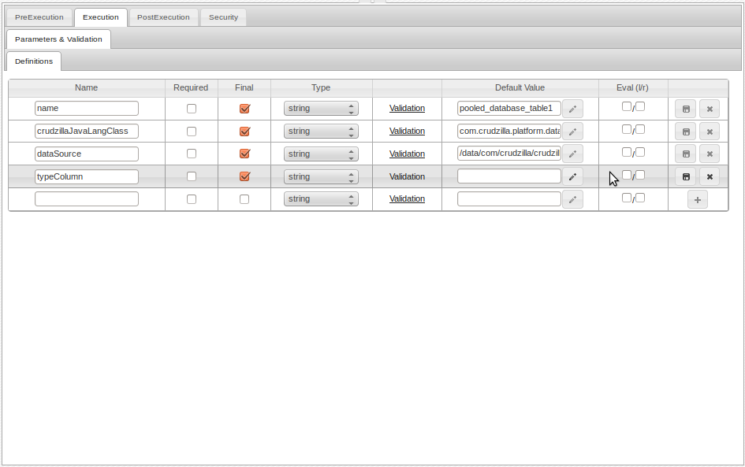
- - The crudzillaJavaLangClass is used internally, do not edit.
- - Provide the DataSource/database to which this DataTable database table belong.
- - Provide the name of the actual Preemptive Schema table created above.
- - This is the column object that will be mapped to type fields of DataModels
Generating DataTable Columns.
After creating a DataTable object as outline above, you need to create corresponding column objects
that will be used to map DataModel fields to actual database table columns.
-
Under your DataTable object folder create a sub-folder called
columns.
-
Right-click on the columns folder and navigate to the Data Modeling menu and select "Generate Columns".
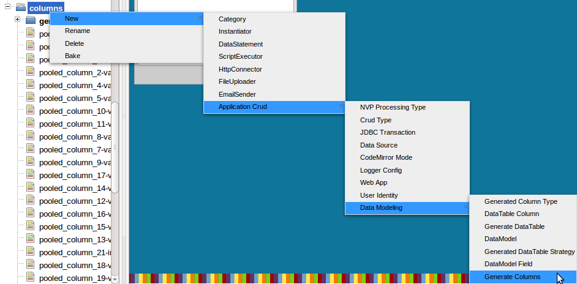
-
Drop a reference to the DataTable created above.
-
Click the "Generate" button to get the available columns from the Preemptive Schema database
table created above.

-
Select the column objects you wish to generate, generally you'll select all.
-
Click the "Create" button to generate DataTable Column objects in the folder you right-clicked
on above.
-
This will create DataTable column objects that you are going to use for mapping to DataModel fields.
The column objects generated will be named following the convention <Premeptive-Schema-table-column-name>-<sql-type>

-
You shouldn't have to edit the generated column objects.
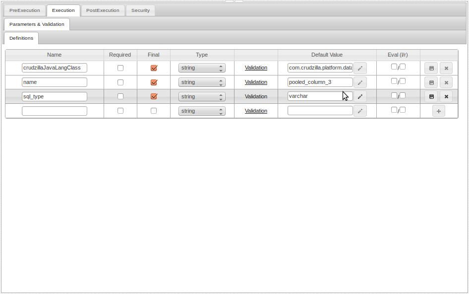
Creating a DataModel
We now need to create the actual DataModels that will represent our application data models such
as say customer, order, inventory...etc.
The first step in creating a DataModel is to determine a namespace for the model. Because
you are going to be storing instances of numerous models in the same Preemptive Schema database table, you need a way to
uniquely identify rows that below to a particular model. The proposed approach is to
use the java package naming convention as a way to create namespaces.
So for instance a DataModel called customer could be stored in the crudbase as
com/crudzilla/crudzilla-website/data/customer.
This path which is relative to the application base directory then becomes the type
identifier for all customer rows.
The path can be relative to any folder, as long as it is likely to be
unique across any number of different DataModels, this would be sufficient to uniquely
identify a given DataModel type.
There should be a field that all DataModels have that specify what their type namespace is.
The field name should be crudzillaType and it should have the namespace value for all instances of the
DataModel.
Automatic approach
The easiest way to create your Data Model is to use the DataModel creation tool:
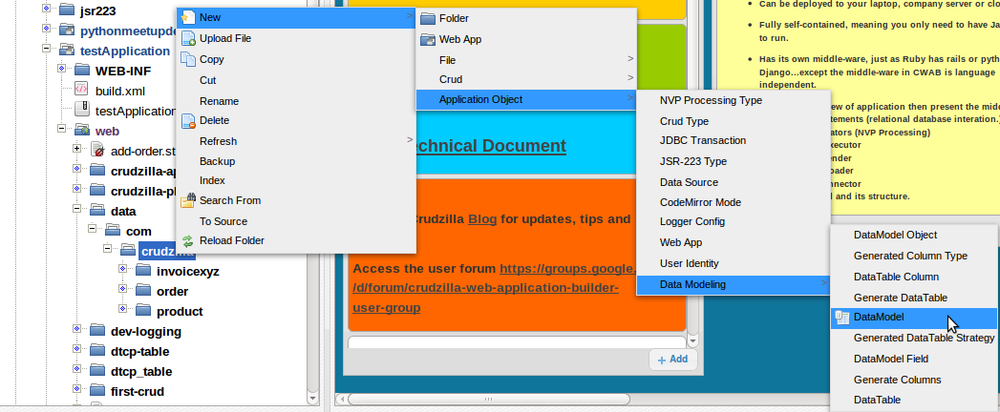
Select a Premeptive Schema table (aka WideTable) to map your model to and then fill in the fields and their
corresponding column mapping.

Manual approach
- In your namespace folder, create a folder to hold your DataModel.
This folder should have the name of your DataModel that you'll use in your sql statements,
for instance
customer
-
Right click on the folder and navigating to the Data Modeling menu to create a
DataModel object.
The DataModel object should be called datamodel.

-
Fillout the DataModel object.
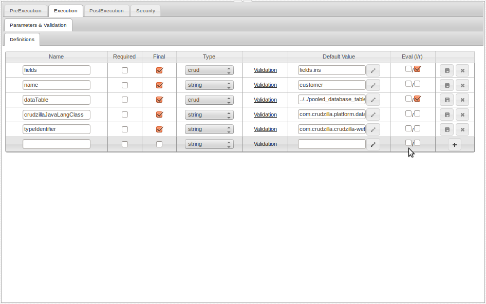
- - do not use, used internally.
- - path to the field list of this DataModel, this should be
fields.ins
- - name of DataModel to be used in DataStatement sql, that is name of the folder created above.
- - path to DataTable object created above, this establishes the connection to actual Preemptive Schema database table.
- - type namespace of this model, this will be used internally by HiveMind for certain tasks.
Creating DataModel Fields
-
Under your DataModel folder, create a sub-folder called
fields.
-
For each field of your DataModel, right click on fields folder and create the DataModel fields by navigating to DataModel Fields
menu.

-
Fill out the DataModel Fields.
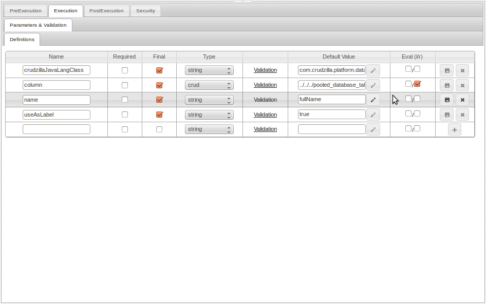
- - should not be altered, it is used internally.
- - drag-n-drop one of the column objects that were generated earlier. The value should be the path to the draged-n-droped column
- - name of the field. This would be used in all sql statements to reference this field.
- - set to true if the name should be automatically used as the label for the mapped column in instances where the AS clause isn't used in sql select statements.
-
Under the DataModel folder create an Instantiator list to hold the fields,
this object should be called fields.
You must add all the fields your created above to this list.
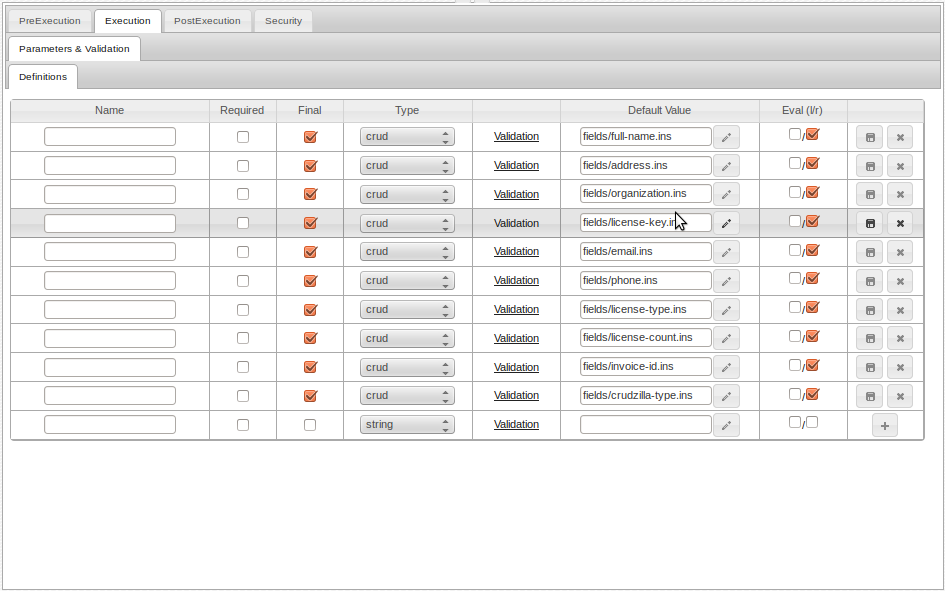
Create DataModel reference
A DataModel reference is an Instantiator list of DataModels that have been defined as required above.
You create any number of references depending on which DataModels you want to use. These
references would then be dropped on the appropriate DataStatement that uses them.
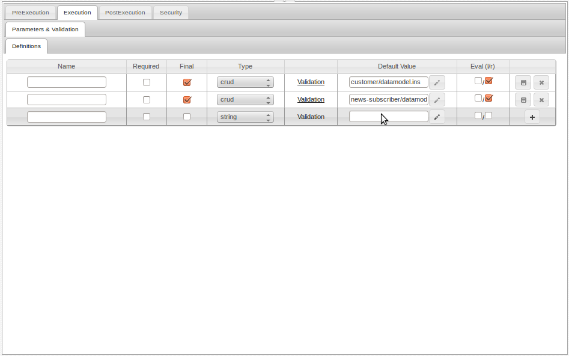
DataTable Summary
DataTable layout
Your DataTable should be layed out as demonstrated below. Below the columns
folder contains DataTable column objects generated as outlined above.
Note DataTables
need not follow the Java naming convention, however you should organize all your
DataTables in an appropriate manner.
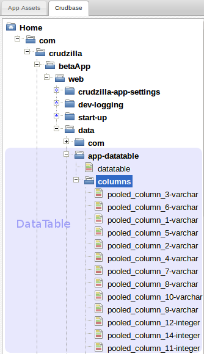
Simplified steps for creating a DataTable
- Create a folder with the same name as your Preemptive Schema table.
- Under this folder, create a DataTable object and it should be called
datatable.
- Fill out the fields of
datatable
- Under the DataTable folder create a sub-folder called
columns
- Right-click on the
columns folder, and generate the DataTable column objects
DataModel Summary
As further clarification, when you are done with the steps outlined above
your crudbase should have the following layouts.
DataModel Layout
The following diagram shows what the layout for a typical applications DataModel should be.
In this diagram we see a DataModel for customer.

Simplified steps for creating DataModel
- Create a namespace that follows java package convention.
- Create a folder under the right namespace with the name of your DataModel
- Under this folder, create a DataModel object and it should be called
datamodel.
- Under this folder, create an Instantiator called
fields
- Under this folder, create a sub-folder called
fields
- Under the sub-folder
fields create your DataModel Field objects
- Make sure there is one field called
crudzillaType
- Fill out all fields for your DataModel fields
- Add the executable path in the
fields Instantiator for each DataModel Field and make sure evaluation is enabled for each entry.
These layouts together describe what a DataModel in HiveMind looks like.
Screencast
Screencast
Backing up your work
It is highly recommeded that you run a regular backup of your work. HiveMind supports backing
up both your file system resources and your crud database.
To add a folder or file to backup, right click and select backup.
To run a backup select Run Backup from Application menu. Note that adding a file or folder to
backup is not the same as running a backup.
The backup resources are all stored in your asset directory in the
folder crudzilla-backup-snapshots.

Note that these backups are local, meaning if the computer on which HiveMind is running suffers
disk failure for instance, then you may lose all your work including backup. To address this
problem you should probably setup some sort of additional backup to save your backups in other
places, such as in the cloud, google drive, github..etc.
Crudzilla will offer a cloud backup service in the near future.
Logging
HiveMind supports logging during development. See section on Programming HiveMind for steps on
how to configure logging.
You can view log output for an application that is currently running from the application
menu.

Note that to configure production logging for your application, you'll need to integrate your
preffered logger and configure it. The logging in the HiveMind development environment is for
development only and isn't persisted to disk. The HiveMind development environment uses log4j,
you may setup something else for your production use.
Within ScriptExecutors the crud object has a method logger() for logging.
It returns the apache commons logging org.apache.commons.logging.Log object.
User Profile
The HiveMind platform provides a mechnism that makes it easy for your application
to use elements in a user's profile. A user's profile is simply imformation
about the currently logged in user, this can include name, contact information
and any other information that you want to associate with a user's profile in
an application.
In your crudzilla-app-settings/system-settings, set the parameter crudzilla_user_profile_initializer to
an executable (likely a DataStatement) path that returns the user profile object. For instances this can be a DataStatement
that uses the crudzilla_user argument map property to lookup the id of
the user which can be used to associate the user with elements in a multi-user application.
You can certainly get your user profile information ondemand, ie at the moment you need it in your
application, however this mechanism allows you to setup user profile retrieval once
and then easily use elements of the profile all over your application.
All elements of the user profile can be accessed in your application using the name pattern
crudzilla_user_<ELEMENT-NAME>, where <ELEMENT-NAME> is
a property in the user profile object returned, such as id.
The user profile object is stored in the http session(httpRequest.getSession()) as crudzilla_user_profile,
to invalidate this object, simply remove it from the session, it will be reloaded next time
a user request is processed. You may also manually [re]load it by setting the session attribute.
Note that the argument map property crudzilla_user
is assumed to be the way you identify a user's profile. This property is available once a user
is authenticated.
Application Startup
When the HiveMind engine is started, you can register a handler to be called. This can be any
crud type though it should be a ScriptExecutor that will take care of startup tasks such as setting up
logging.
In your crudzilla-app-settings/system-settings, set the parameter crudzilla_engine_startup_handler to your startup
crud path.
Note, this parameter should not be evaluated, just the path to the crud is required, the engine will
execute it once full engine setup is complete.
By default new applications have a folder called /app-startup with a Groovy script on-crud-engine-startup.ste, you can simply use this.
Deploying Applications
The HiveMind product is built on top of the jetty container. When you are building your
application it will be running in jetty. You can deploy your finished application to
another application server of your choice though the existing setup is recommended
unless there is solid reason to use a different java appserver/container.
The key jar dependencies are outlined as follows.
-
cwab-dist/lib/ext/crudzilla contains all crudzilla dependent jars.
-
All jars in
cwab-dist/lib/ext/crudzilla/core are required to run crud
applications except
- - required for development only unless you want to use ant in prod.
- - required for development only unless you want to use ant in prod.
- - if you are not using log4j in prod then you must include your preferred logging implementation.
-
In
cwab-dist/lib/ext/crudzilla/jvm-language-support the required jars are
- - jexl language support.
- - groovy language support.
- - velocity template support.
The jars below are required if you use the given languages in your applications
- - if you use javascript.
- - if you use ruby.
- - if you use python.
- - if you use clojure.
-
jars in
cwab-dist/lib/ext/crudzilla/dev-tools are only required during development.
-
Additionally, jars in cwab-dist/lib/ext/mail include the Java mail api and implementation.
Your production environment may or may not have the required Java mail support.
The HiveMind EmailSender crud type uses the apache commons mail component which requires
Java mail support.
Visual UI Design
The HiveMind developer product provides a powerful visual development environment. This feature
allows for UI frameworks such as bootrapped, ionic, foundation ..etc to be used in
a visual drang-n-drop way to build UIs.
There's currently no tooling for enabling a particular framework but you can do so manually.
/com/crudzilla/HiveMind/web/html-layout/frameworks contains framework definitions.
To add a new framework simply follow the bootstrap example included.
The pattern for defining a framework is to define all components that can be drag-n-drop,
define whether they accepts other components. For additional help please visit the google
group. We'll provide additional info later.
Building UI Parts
What are UI Parts
UI Parts are visual components that developers can use to quickly build applications.
There is nothing foundamentally different about UI Parts other than the fact that they are built with the
expectation that they'll be used on the HiveMind platform and the end-user-developer would be integrating
them visually. In other words, a UI Part is a component that can be designed/configured visually
and allows the end-user-developer to only specify what is essential, such as custom logic.
You as the UI Part builder can make your part as visually sophiscated as you deem necessary,
the HiveMind platform prescribes no requirements for how to build parts other than defining
an integration interface.
For instance let's say you build a part using the jqGrid jquery library. You'll want to provide
a means for the end-user-developer to visually create columns and drag-n-drop a DataStatement to
get the data from. You as the part developer would handle making sure that when your part is loaded
at runtime it behaves accordingly.
The most basic example of a UI Part would be html/css/js snippets as you can find on sites such
as bootsnip.com. Now imagine more sophiscated components that can integrate with other components
and integrate with a back end, that is what parts are.
Ultimately UI Parts are about leveraging another developer's work in as painless/effortless a manner
as possible.
Markup dependencies
A markup dependency is how you instruct the HiveMind UI builder to select the appropriate html element when
a drag-n-drop is performed.
To declare a dependency, specify the attribute data-crudzilla-depends-on on an element.
This is a comma seperated list of JQuery/CSS selectors.
The HiveMind UI builder would load these dependencies in the order they are listed. For instance, a certain html snippet
may depend on a set of css style definitions, in that case the css style tag would be listed as a dependency
to be loaded before the html snippet.
If an element is drag-n-drop and no markup dependency is declared on it, then the element is inserted
into the active document.
However if a markup dependency is declared, the element that is dragged is never
automatically dropped onto the active document. If this element needs to be dropped, then you must list it
as a dependency. In order words an element that has dependencies that includes itself should
list itself as a dependency.
Below is an illustration of how to declare markup dependencies:
External dependencies
An external dependency is an external file that needs to be downloaded and
placed in the right directory within the current application for the drag-n-drop to work properly.
It can be a Javascript library dependency, for instance JQuery
or an image,or backend logic, basically anything required for the given component to work properly.
The attribute data-crudzilla-external-dependency-src is used to specify external dependencies.
This attribute is a comma seperated list of of previously defined dependencies as described in the UI Part Javascript interface section.
It can also simply be the urls for the depended-upon resource.
For instance if a script is a dependency, then that script could define this
attribute and have it point to the url to download this script.
Similarly other resources such as images and css style sheets can be
be specified as external dependencies that need to the downloaded.
The HiveMind UI builder would handle the downloaded and proceed after all resources have been downloaded.
Below is an illustration of how to declare external dependencies:
UI Part Javascript interface
A part must implement the following interface to fully integrate into the
HiveMind UI Builder:
The document object
There is a document object associated with every design mode document. The active document
is accessible via the method crudzilla.part.getActiveDoc(). In general a
part developer isn't expected to do anything with the document object other than passing
it as an argument, so as to establish context for various operations.
Integration attributes
The following element attributes are available for integration of UI Parts into
the HiveMind UI Builder.
-
data-crudzilla-call-ondrop: If this attribute is defined, then the processing of the dragged
component would be delegated to the interface crudzilla.part.onDrop which is expected to have
been implemented by the UI part. The value of this attribute is true.
-
data-crudzilla-part-component-id:This attribute is recommended for identifying components. You
can choose other attributes but this is recommended because the UI tool may need to use it in
the future. You'll specifiy this attribute on all dependencies and then reference those dependencies
with an attribute selector that specifies this attribute.
If you are a developer who wants to build parts, join our google group
to engage other developers.
Note we are going to make the parts store a
marketplace where developers can sell their parts, so get on board!
Navigating Application Resources
Navigating application resources in the HiveMind environment involves navigating file system resources and database resources.

Apps & Assets
This tab is used for navigating file system resources. Specifically the HiveMind developer environment
application has an asset directory where all items that can be worked on in the HiveMind developer
environment are stored. This includes all applications.
The actual location of the asset directory is cwab-dist/crudzilla-apps/crudzilla.
Various Menu Action
Depending on the type of resource you right-click on, any number of the following actions
maybe be avaialble in the resulting context menu.
- - creates a new resource
- - create new folder
- - creates a new Java web application
- - creates one of the following file types.
- - create one of the following crud types
- - create one of the following
- - datasource for connecting to database
- - create a jdbc transaction
- - create a new CodeMirror editor mode
- - web app configuration object
- - user identity object
-
- - upload a file to the asset directory
- - copy an item in the asset directory
- - paste an item in the asset directory
- - Rename an item in the asset directory
- - Delete an item in the asset directory
- - Refresh an item in the asset directory, when it is a a folder the following options are available
- - refresh only Instantiators
- - refresh only DataStatements
- - refresh only ScriptExecutors
- - refresh only HttpConnectors
- - refresh only FileUploader
- - refresh only EmailSenders
- - refresh all cruds regardless of type
- - opens a new tab with a clone of the asset directory try for easy drag-n-drop
- - add item to backup
- - transform crud to source form for editing
- - view html/crud in wysiwyg editor
- - runs a test
- - builds a build.xml file
The Crudbase
This tab is for navigating the crud database. All crud definitions are stored in a database and
all alterations to crud definitions are against this database. This database has a
taxonomy layered on top of it which allows for interacting with, and manipulation of the
crud database in a manner similar to a filesystem. In other words the items on this
tab are not on the file system but in a database.
This is an embeded derby database cwab-dist/derby/crudzilla
Various Menu Action
Depending on the type of resource you right-click on, any number of the following actions
maybe be avaialble in the resulting context menu.
- - create one of the following
- - create a taxonomy category node
- - create one of the following
- - datasource for connecting to database
- - create a jdbc transaction
- - create a new CodeMirror editor mode
- - web app configuration object
- - user identity object
-
- - show search tab for search and drag-n-drop of cruds.
- - clone crudbase tree for easy drag-n-drop operations.
- - rename category or crud
- - delete category or crud
- - bake a crud/category of cruds, ie make a crud definition executable.
- - clone this crud
- - baking turns a crud definition in the crudbase to an executable file on disk.
- - delete crud from taxonomy and crudbase
- - test crud
- - remove crud from taxonomy but don't delete from crudbase.
Note that all actions in the crudbase should happen in the context of an application.
Meaning categories and cruds you create and manipulate must ultimately be along a valid
application path that mirrors the application path in the asset directory.
Creating cruds and categories that don't map to an existing application is likely to create
problems because the HiveMind platform assumes all cruds belong to an application.
Screencast